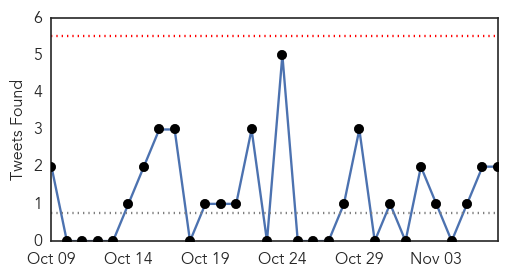
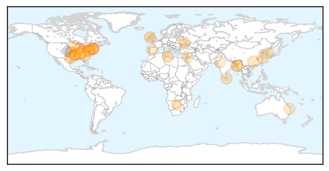

Pertussis
30-Day Web Trend
0 alerts, 0 warnings
30-Day Twitter Trend
0 alerts, 0 warnings

Article Locations
Article Confidences

Top Articles:
Top Tweets:
-
No tweets found for Nov 07, 2014
Unknown
30-Day Web Trend
0 alerts, 0 warnings
30-Day Twitter Trend
0 alerts, 0 warnings

Article Locations
Article Confidences
Top Articles:
- 0.949
- Raimondo Joins RI Director of Health to Promote Flu Vaccination
- 0.936
- Bill for potential tuberculosis exposure is $10,000 so far, El Paso health officials say
- 0.924
- NHS flu vaccinations extended to older children in fight against winter colds
- 0.917
- Chicago Tribune
- 0.917
- Chicago Tribune
- 0.887
- NZ free of equine viral arteritis after 26-year effort
- 0.882
- More flu shots being shipped and clinics rescheduled
- 0.866
- Gazprom asks Ukraine to prepay for November gas supplies
- 0.840
- Quebec turns up second case of PEDv in hogs
- 0.838
- Enterovirus D-68 reported at Millington, Tenn. school
- 0.838
- Case of Tuberculosis in Local School
- 0.817
- Your Messenger for the River Valley
- 0.816
- First Lawsuit Filed in Greenville Hospitals Infection Cases
- 0.803
- Bangladesh: Bringing malaria care to remote communities
- 0.783
- "A Handful of Water for Healthy Living" will be launched today
- 0.755
- WHO's new director for Africa promises to improve health systems
- 0.749
- Doctors baffled by disease causing blisters and deformities in China
- 0.747
- The Mayday Project Responds to Dr. Paul Auwaerters Defense of IDSA Guidelines for Lyme Disease
- 0.747
- CHP offering high-dose influenza vaccine « The VW independent
- 0.742
- WHO's director for Africa promises to improve health systems
- 0.728
- Norovirus has arrived in the KRV
- 0.726
- HEALTH: Governor-Elect gets a flu shot
- 0.710
- Germany to Cull 31,000 Turkeys after Bird Flu Detected
- 0.683
- Are double-disease initiatives global health's low hanging fruit?
- 0.672
- Dutch spa visitor dies of Legionnaires' disease
- 0.660
- Bangladesh: MSF responds to an upsurge in malaria cases
- 0.655
- Psoriasis or Rheumatoid Arthritis Linked to Heart Risk
- 0.637
- Beware Blackbutt bats: Shellharbour councillor
- 0.625
- Behind Maplewood incident, a rising trend of hospital violence
- 0.592
- Patients lose patience as all resident doctors join cease work stir
- 0.528
- Nurse practitioners, physician assistants fill in primary care gaps
Top Tweets:
- 0.805
- RT: MERS: KSA says a Riyadh hospital outbreak started when a patient from Taif sought care there. Undetected cases=risk h…
- 0.688
- Pneumococcal disease can be a flu complication. Adults 65+ now need 2 pneumococcal vaccines: PCV13 then PPSV23.
- 0.607
- update on 12 recent MERS cases in KSA: only 1 case linked to camel! Global total of cases: 909 w/ 331 deaths. http://t.co/lN0UGfmi8L
- 0.606
- tengo frío pero no puedo evitar prender el aire en la guagua masoquistaprimero